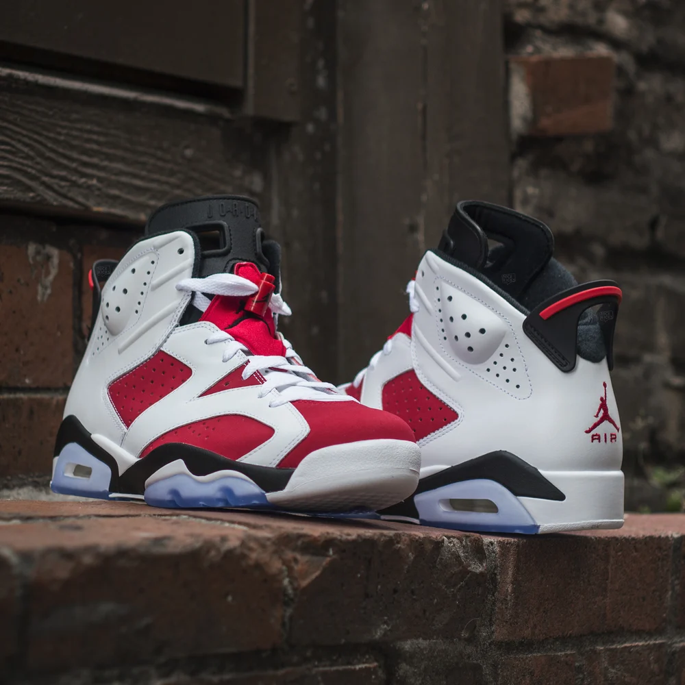

The Air Jordan 6 "Carmine" is a classic sneaker that first debuted in 1991 and is recognized for its bold colorway and iconic design. It holds a special place in sneaker history, particularly associated with Michael Jordan's early years in the NBA. **Key Features:** - **Colorway**: The "Carmine" features a striking white leather upper contrasted with vibrant Carmine red accents. Black detailing appears on the midsole and heel tab, creating a dynamic look. - **Design Elements**: The sneaker showcases the classic Jordan 6 silhouette, characterized by its high-top collar, unique lace locks, and perforated panels for breathability. The visible Air unit in the heel adds both style and cushioning. - **Materials**: Made from premium leather and nubuck, the Air Jordan 6 ensures durability and a comfortable fit, suitable for both performance on the court and casual wear. - **Comfort and Performance**: Known for its cushioning and support, the Jordan 6 is designed to enhance athletic performance, making it a favorite among players and sneaker enthusiasts alike. - **Cultural Significance**: The "Carmine" colorway is iconic not only for its association with Michael Jordan but also for its bold aesthetics, making it a highly sought-after model among collectors. Overall, the Air Jordan 6 "Carmine" is celebrated for its classic design, vibrant color scheme, and enduring legacy in both basketball and sneaker culture.
